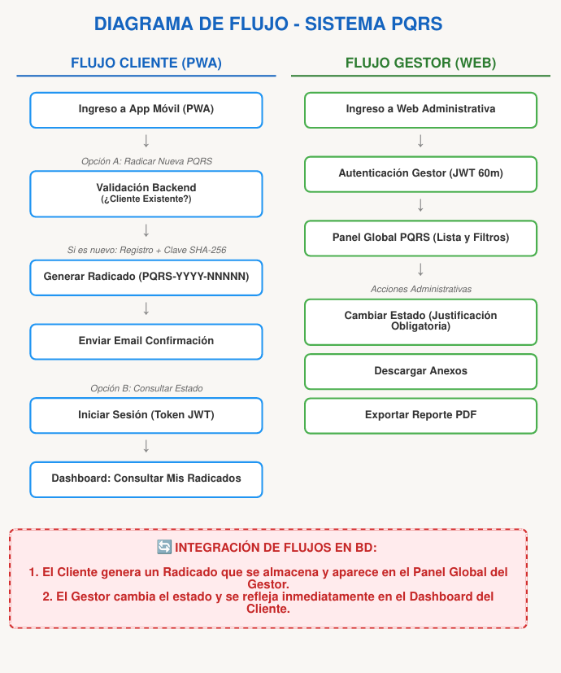
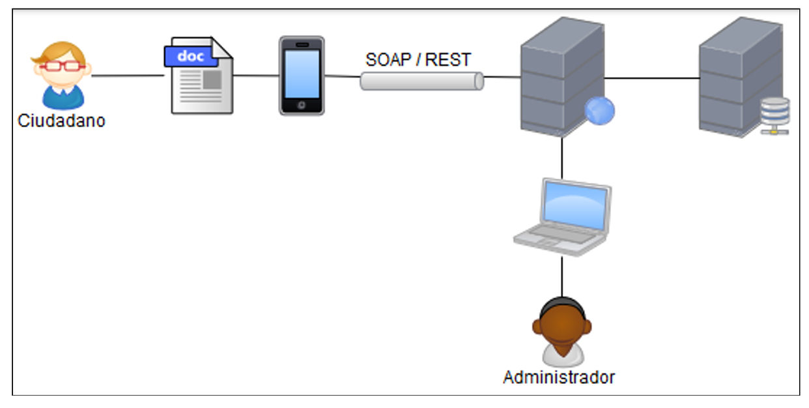
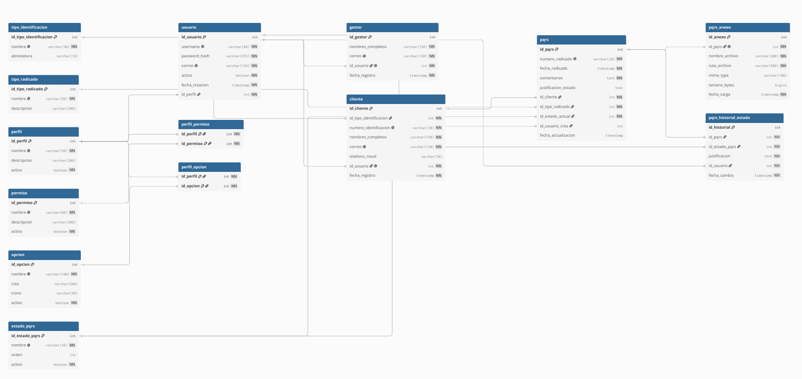

Cliente: SuperMarket
Desliza hacia abajo para continuar
SuperMarket requiere modernizar la atención a sus clientes tras la recepción de compras online.
Apoyar las iniciativas de "Cero Papel" y cultura "Anti-trámites" mediante un canal 100% digital, ecológico y eficiente.
Una vista general del recorrido de la información desde que el usuario radica hasta su resolución.

El flujo garantiza una separación clara de responsabilidades entre el Cliente y el Gestor.
Diseñado bajo la filosofía Mobile-First (PWA) para garantizar acceso desde cualquier dispositivo sin fricciones.
Creación automática de un código de seguimiento único (formato PQRS-YYYY-NNNNN). El sistema permite adjuntar soportes (anexos PDF/Imágenes) de forma segura.
Si un usuario es nuevo, el backend lo detecta y lo registra automáticamente durante su primera radicación. Se genera una clave cifrada (SHA-256) que es enviada directamente a su correo electrónico.
Acceso seguro mediante validación de credenciales. Las sesiones se controlan mediante tokens JWT con una expiración estricta de 30 minutos para proteger la privacidad del cliente en dispositivos públicos.
El cliente tiene acceso a un dashboard exclusivo donde solo puede visualizar el estado y la trazabilidad de sus propias PQRS radicadas, garantizando la confidencialidad de la información.
Panel administrativo web optimizado para la gestión masiva, auditoría y resolución de radicados de SuperMarket.
Vista global de todas las PQRS. El gestor puede aplicar filtros acumulativos y dinámicos (por Tipo de radicado o Estado actual) para priorizar la atención y cumplir con los tiempos de respuesta (SLA).
Flujo de estados controlado (Nuevo → En Proceso → Resuelto). El sistema exige obligatoriamente una justificación detallada (máx. 500 caracteres) para cada cambio, garantizando una trazabilidad legal incorruptible.
Generación de reportes consolidados en formato PDF. Para proteger el SLA del backend (< 3 segundos), el procesamiento y renderizado del documento se delega completamente al frontend (JavaScript).
Control de acceso robusto para empleados. Los tokens JWT de los gestores cuentan con un tiempo de vida extendido de 60 minutos, permitiendo jornadas de trabajo continuo sin interrupciones constantes.
Para visualizar de manera tangible la experiencia de usuario y el funcionamiento de las reglas de negocio descritas (Radicación, Auto-registro, Gestión de Estados), realizaremos una demostración directa sobre el sistema desplegado.
Diseño desacoplado (Cliente-Servidor) enfocado en alta disponibilidad e independencia de capas.

Estructura relacional normalizada en PostgreSQL para garantizar integridad referencial y cumplir con el SLA de latencia.
Un diseño libre de redundancias permite búsquedas eficientes y respuestas de la API en menos de 3 segundos.

HTML, CSS y JS Puro. Mobile-First sin frameworks pesados para maximizar la velocidad de carga.
Java + Spring Boot. Uso de Spring Data JPA (Hibernate) para un mapeo ORM seguro y robusto.
PostgreSQL relacional. Seguridad con tokens JWT (Stateless) y cifrado local SHA-256.
¿Por qué nuestra solución aporta más valor a SuperMarket que otros productos del mercado?
No obligamos al cliente a buscar, descargar y actualizar una app pesada. Nuestra solución se instala en segundos desde el navegador, ahorrando costos de publicación en tiendas y democratizando el acceso a celulares de gama baja.
A diferencia de monolitos que colapsan generando PDFs, delegamos la renderización de reportes al procesador del cliente (JS). Esto libera recursos del servidor y garantiza un SLA < 3s, reduciendo costos de nube.
Ninguna HU pasó a 'Terminada' sin cumplir:
Pruebas unitarias ejecutadas (QA).
Código limpio y refactorizado.
Despliegue funcional en local.
Cumplimiento estricto de SLAs.
El Sistema PQRS del equipo K3 dota a SuperMarket de un ecosistema escalable, amigable para el cliente y blindado en seguridad, convirtiendo la filosofía "Cero Papel" en una realidad operativa real.
Estamos listos para la defensa técnica.